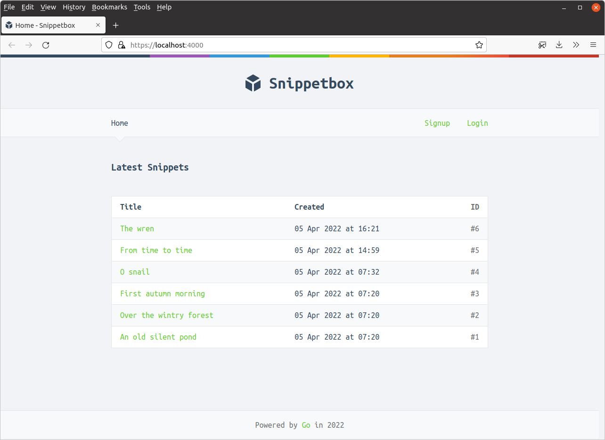
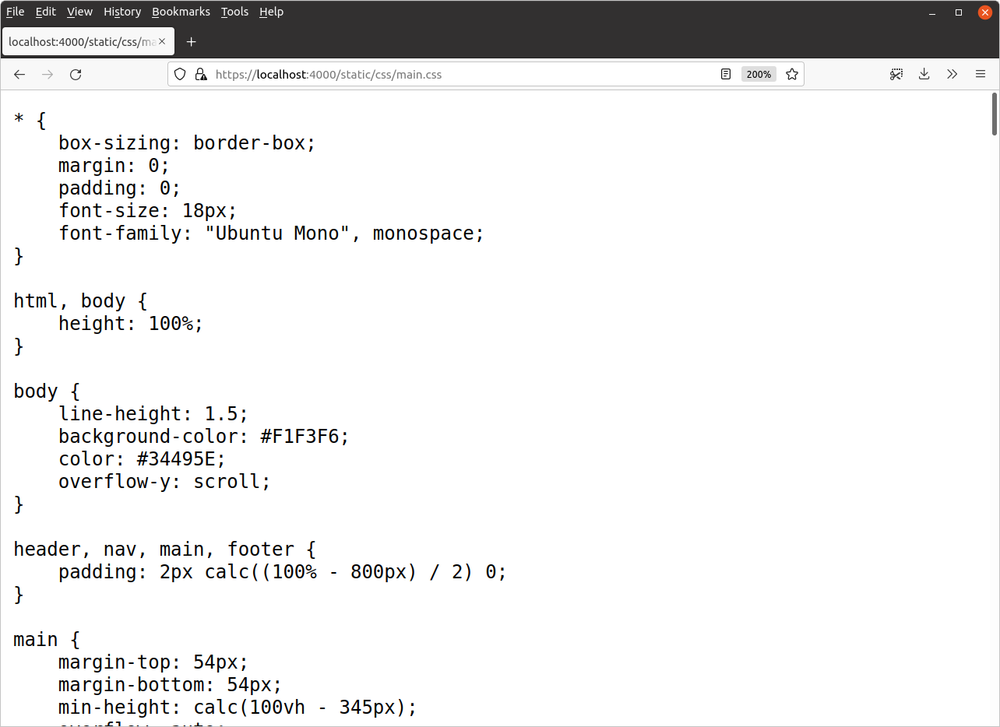

جاسازی فایلهای استاتیک (Embedding Static Files)
در این بخش، نحوه جاسازی فایلهای استاتیک (Embedding Static Files) را بررسی میکنیم. این شامل فایلهای CSS (CSS Files)، فایلهای JavaScript (JavaScript Files) و تصاویر (Images) میشود.
با استفاده از دستور جاسازی (Embed Directive)، میتوانیم این فایلها را در باینری برنامه (Program Binary) قرار دهیم.
اگر در حال دنبال کردن هستید، اولین کاری که باید انجام دهید ایجاد یک فایل جدید ui/efs.go است:
$ touch ui/efs.go
سپس کد زیر را اضافه کنید:
package ui import ( "embed" ) //go:embed "static" var Files embed.FS
خط مهم در اینجا //go:embed "static" است.
این به نظر یک نظر میآید، اما در واقع یک دستورالعمل نظر خاص است. هنگامی که برنامه ما کامپایل میشود (به عنوان بخشی از go build یا go run، این دستورالعمل نظر به Go دستور میدهد تا فایلهای موجود در پوشه ui/static ما را در یک سیستم فایل جاسازی شده که توسط متغیر جهانی Files ارجاع داده میشود، ذخیره کند.
چند جزئیات مهم در مورد این وجود دارد که باید توضیح دهیم.
دستورالعمل نظر باید بلافاصله بالای متغیری که میخواهید فایلهای جاسازی شده را در آن ذخیره کنید، قرار گیرد.
دستورالعمل دارای فرمت
go:embed "<path>"است. مسیر نسبت به فایل.goحاوی دستورالعمل است، بنابراین — در مورد ما —go:embed "static"دایرکتوریui/staticرا از پروژه ما جاسازی میکند.شما فقط میتوانید از دستورالعمل
go:embedبر روی متغیرهای جهانی در سطح بسته استفاده کنید، نه در داخل توابع یا متدها. اگر سعی کنید از آن در داخل یک تابع یا متد استفاده کنید، در زمان کامپایل خطای"go:embed cannot apply to var inside func"را دریافت خواهید کرد.مسیرها نمیتوانند شامل
.یا..باشند، و نمیتوانند با/شروع یا پایان یابند. این اساساً شما را به جاسازی فایلها یا دایرکتوریهایی که در همان دایرکتوری فایل.goحاوی دستورالعملgo:embedهستند، محدود میکند.سیستم فایل جاسازی شده همیشه در دایرکتوری که حاوی دستورالعمل
go:embedاست، ریشه دارد. بنابراین، در مثال بالا، متغیرFilesما حاوی یک سیستم فایل جاسازی شدهembed.FSاست و ریشه آن سیستم فایل دایرکتوریuiما است.
استفاده از فایلهای استاتیک جاسازی شده
حالا بیایید برنامه خود را تغییر دهیم تا فایلهای استاتیک CSS، JavaScript و تصویر ما را از سیستم فایل جاسازی شده ارائه دهد — به جای خواندن آنها از دیسک در زمان اجرا.
فایل cmd/web/routes.go خود را باز کنید و آن را به صورت زیر بهروزرسانی کنید:
package main import ( "net/http" "snippetbox.alexedwards.net/ui" // New import "github.com/justinas/alice" ) func (app *application) routes() http.Handler { mux := http.NewServeMux() // Use the http.FileServerFS() function to create a HTTP handler which // serves the embedded files in ui.Files. It's important to note that our // static files are contained in the "static" folder of the ui.Files // embedded filesystem. So, for example, our CSS stylesheet is located at // "static/css/main.css". This means that we no longer need to strip the // prefix from the request URL -- any requests that start with /static/ can // just be passed directly to the file server and the corresponding static // file will be served (so long as it exists). mux.Handle("GET /static/", http.FileServerFS(ui.Files)) dynamic := alice.New(app.sessionManager.LoadAndSave, noSurf, app.authenticate) mux.Handle("GET /{$}", dynamic.ThenFunc(app.home)) mux.Handle("GET /snippet/view/{id}", dynamic.ThenFunc(app.snippetView)) mux.Handle("GET /user/signup", dynamic.ThenFunc(app.userSignup)) mux.Handle("POST /user/signup", dynamic.ThenFunc(app.userSignupPost)) mux.Handle("GET /user/login", dynamic.ThenFunc(app.userLogin)) mux.Handle("POST /user/login", dynamic.ThenFunc(app.userLoginPost)) protected := dynamic.Append(app.requireAuthentication) mux.Handle("GET /snippet/create", protected.ThenFunc(app.snippetCreate)) mux.Handle("POST /snippet/create", protected.ThenFunc(app.snippetCreatePost)) mux.Handle("POST /user/logout", protected.ThenFunc(app.userLogoutPost)) standard := alice.New(app.recoverPanic, app.logRequest, commonHeaders) return standard.Then(mux) }
اگر این تغییرات را ذخیره کنید و سپس برنامه را مجدداً راهاندازی کنید، باید متوجه شوید که همه چیز به درستی کامپایل و اجرا میشود. هنگامی که به https://localhost:4000 در مرورگر خود مراجعه میکنید، فایلهای استاتیک باید از سیستم فایل جاسازی شده ارائه شوند و همه چیز باید به صورت عادی نمایش داده شود.

اگر میخواهید، میتوانید مستقیماً به فایلهای استاتیک بروید تا بررسی کنید که هنوز در دسترس هستند. به عنوان مثال، مراجعه به https://localhost:4000/static/css/main.css باید استایل شیت CSS برای صفحه وب را از سیستم فایل جاسازی شده نمایش دهد.

اطلاعات اضافی
مسیرهای متعدد
کاملاً درست است که مسیرهای متعددی را در یک دستورالعمل جاسازی مشخص کنید. به عنوان مثال، میتوانیم به صورت جداگانه دایرکتوریهای ui/static/css، ui/static/img و ui/static/js را به صورت زیر جاسازی کنیم:
//go:embed "static/css" "static/img" "static/js" var Files embed.FS
جاسازی فایلهای خاص
در ابتدای فصل به این موضوع اشاره کردم، اما ممکن است که یک مسیر جاسازی به یک فایل خاص اشاره کند. جاسازی فقط به دایرکتوریها محدود نمیشود.
به عنوان مثال، فرض کنیم که دایرکتوری ui/static/css ما شامل برخی از داراییهای اضافی است که نمیخواهیم جاسازی کنیم، مانند فایلهای Sass یا Less. در این صورت، میتوانیم فقط فایل ui/static/css/main.css را به صورت زیر جاسازی کنیم:
//go:embed "static/css/main.css" "static/img" "static/js" var Files embed.FS
مسیرهای وایلدکارد
کاراکتر * میتواند به عنوان یک ‘وایلدکارد’ در یک مسیر جاسازی استفاده شود. با ادامه مثال بالا، میتوانیم دستورالعمل جاسازی را به گونهای بازنویسی کنیم که فقط فایلهای .css زیر ui/static/css جاسازی شوند:
//go:embed "static/css/*.css" "static/img" "static/js" var Files embed.FS
مرتبط با آن، اگر از مسیر وایلدکارد "*" بدون هیچ گونه مشخصهای استفاده کنید، مانند این:
//go:embed "*" var Files embed.FS
… سپس همه چیز در دایرکتوری فعلی جاسازی میشود، از جمله فایل .go که خود دستورالعمل جاسازی را دارد! بیشتر اوقات نمیخواهید این کار را انجام دهید، بنابراین معمولاً به صورت صریح زیر دایرکتوریها یا فایلهای خاص را جاسازی میکنید.
پیشوند all
در نهایت، اگر مسیری به یک دایرکتوری باشد، همه فایلهای آن دایرکتوری به صورت بازگشتی جاسازی میشوند — به جز فایلهایی که نام آنها با کاراکترهای . یا _ شروع میشود. اگر میخواهید آن فایلها را نیز شامل کنید، باید از پیشوند all: در ابتدای مسیر استفاده کنید.
//go:embed "all:static" var Files embed.FS
واژهنامه اصطلاحات فنی
| اصطلاح فارسی | معادل انگلیسی | توضیح |
|---|---|---|
| جاسازی فایلهای استاتیک | Embedding Static Files | قرار دادن فایلهای ثابت در برنامه |
| فایلهای CSS | CSS Files | فایلهای سبک ظاهری |
| فایلهای JavaScript | JavaScript Files | فایلهای اسکریپت |
| تصاویر | Images | فایلهای گرافیکی |
| دستور جاسازی | Embed Directive | دستور برای جاسازی فایل |
| باینری برنامه | Program Binary | فایل اجرایی برنامه |
| سرور فایل استاتیک | Static File Server | سرویسدهنده فایلهای ثابت |
| مسیر فایل | File Path | آدرس فایل در سیستم |
| نوع محتوا | Content Type | نوع داده فایل |
| فشردهسازی | Compression | کاهش حجم فایل |